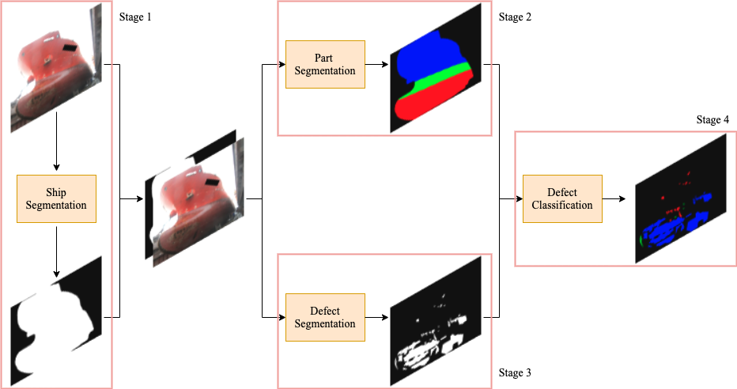

|
Phone: +1 (814) 852 9160 Email: liyudarren@hotmail.com CV GitHub LinkedIn I am a second year master student in College of IST at the Pennsylvania State University. I work with Prof. James Z. Wang and Prof. Jia Li. My research interest is the application of Computer Vision and Artificial Intelligence in real-world problems. I received my BS degree in Chemistry and Mathematics at Peking University and MS degree at Emory University. |
Research
- My current research work includes explainable image retrieval using positive gradient distance, and the application of deep learning algorithms in ship corrosion image analysis, with PPG Industries, Inc..
Publications
|  |
Surface Defect Detection and Evaluation for Marine Vessels using Multi-Stage Deep Learning Li Yu, Kareem Metwaly, James Z. Wang, and Vishal Monga (IEEE Trans. TITS), IEEE Transactions on Intelligent Transportation Systems [In Preparation] |
|
Spotting Silent Buffer Overflows in Execution Trace through Graph Neural Network Assisted Data Flow Analysis Zhilong Wang, Peng Liu, Li Yu, Suhang Wang (IEEE S&P 2021), 42nd IEEE Symposium on Security and Privacy [Submitted] |
|
|
StarGAN-EgVA: Emotion Guided Continuous Affect Synthesis Li Yu, Dolzodmaa Davaasuren, Shivansh Rao, Vikas Kumar ACM Multimedia (ACM MM 2020), Proceedings of the 1st International Workshop on Human-centric Multimedia Analysis [Paper] |
|
 |
Noisy Student Training using Body LanguageDataset Improves Facial Expression Recognition Vikas Kumar, Shivansh Rao, Li Yu 16th European Conference on Computer Vision (ECCV 2020), First International Workshop on Bodily Expressed Emotion Understanding [Paper] |
 |
Ensemble learning for early identification of students at risk from online learning platforms Li Yu, Tongan Cai 16th International Conference on Data Science (ICDATA 2020) (To appear) Advances in Data Science & Information Engineering, Springer |
Projects
| Li Yu, Jia Li Explainable and Robust Image Retrieval Based on Positive Gradient Distance |
|
 |
Vikas Kumar, Shivansh Rao, Li Yu 3D Room Layout Estimation |
 |
Li Yu, Xin Xiong, Ying Wang, Pengcheng Ma Artificial Intelligence Assisted Thinprep Cytologic Test (TCT). |
| Li Yu, Xin Xiong, Ying Wang, Pengcheng Ma Artificial Intelligence Assisted Tumor Mutation Burden (TMB) prediction. |